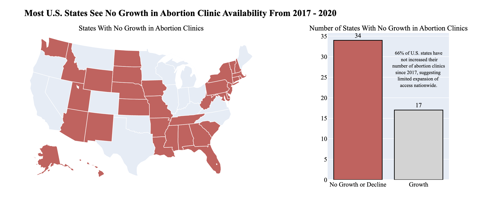
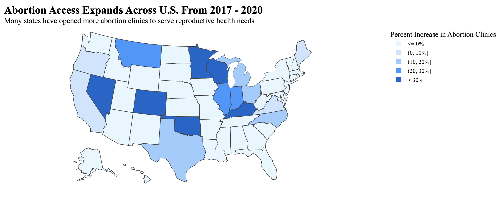

Proposition: Access to abortion clinics in the U.S. has seen limited overall growth from 2017 to 2020, with most states showing no increase in clinic availability.
FOR the Proposition

Design Decisions and Rationale:
- Use of Color In Map (-1): I used red to draw immediate attention to states with no growth, suggesting concern or warning. To visually de-emphasize states not of interest, I used a very light gray. Since choropleth maps rely heavily on the use of area, using these colors instantly attracts the reader to the red areas of the map, leading them to believe that the majority of the country has seen no growth in abortion clinic availability.
- Grouping of Zero and Negative Values in Clinic Rates (-1): I grouped zero and negative clinic growth values together and omitted the color scale to focus attention on the presence or absence of growth, rather than the magnitude. Most states of interest have 0 or very little negative growth rates, so grouping all of these states together focuses the viewer on the fact that growth doesn’t exist in these states rather than the magnitude of the growth.
- Inclusion of a Bar Chart for State Count (2): To compensate for the area bias in the map, I added a bar chart that shows the number of states with and without growth. This further supports the visual argument and balances the geographic perspective with a clear quantitative breakdown. The annotation within the bar chart also reinforces this point, clearly stating to the reader the takeaway from the bar chart.
AGAINST the Proposition

Design Decisions and Rationale:
- Color Scale (-1.5): I binned the data into five categories, mapping states with higher percentage increases in abortion clinics to progressively darker shades of blue. I deliberately set the highest bin at 30% to make it seem like more states experienced significant growth. Additionally, I used a very light blue (rather than white) for the '≤0%' bin, which subtly suggests some level of growth at first glance, even for states with no increase in clinics.
- Use of Percentages Rather Than Clinic Counts (-1): I chose to represent abortion clinic expansion using percentage increases rather than raw clinic counts, making the growth appear more significant. For example, Kentucky shows a 100% increase in clinics, but this only represents an increase from 1 to 2 clinics, which percentage-based reporting obscures. This framing makes small increases seem much more substantial.
- Only Using a Map to Visualize (-0.5): As mentioned in my other visualization, choropleth maps introduce area bias, where larger states appear more influential regardless of their population or actual clinic numbers. I leveraged this by only using a map, which makes it seem like a majority of the U.S. has expanded abortion access, even though only 17 states have experienced growth.
Final Reflection
While I thought that designing these visualizations would be relatively simple, once I began to think about all of the design choices I needed to make, I realized how complex this project actually was. Plotting the data itself was relatively simple, but making deliberate choices to shape viewer perception required me to really think about how each visual element could influence the interpretation of my plot. I was most surprised at how easily small decisions, such as shifting a color scale or grouping values, could drastically change the perceived message despite the underlying data remaining unchanged. Both of my plots heavily relied on color to drive their main arguments, so I found myself heavily thinking about the decisions I made regarding color and how I could use it to my advantage. I also realized how the visualizations themselves could affect the message. Since I decided to use choropleth maps for both of my visualizations, I had to consider the fact that these plots have innate biases regarding area. For example, I decided to add a bar plot to my visualization that supported my proposition to help reinforce the choropleth’s message and improve earnesty, while on the other hand, I only kept the choropleth map on the visualization that opposed my proposition as a deceptive technique.
Through working on this project, I found myself thinking about how easy it can be to make a visualization that can be considered unethical. Ethical visualizations aren’t just about accuracy in numbers, but they are also about transparency in framing, design choices, and awareness of how audiences will interpret visualizations. Persuasive visualizations can be both effective and ethical if their intent is to clarify, not obscure. In my opinion, the boundary between “acceptable” and “misleading” lies in whether the viewer could reasonably misinterpret the scale or implication of the data based on design choices. For example in my opposing visualization, using a shade of blue for all of the bins, even for the bin that didn’t show growth, is easily misinterpretable if the viewer is looking at the visualization at a glance, as it is suggesting them to think that all states experience some level of growth, even though the legend explicitly disproves this. Ultimately, I think that knowing how a visualization can influence a viewer is vital to understand in order to create visualizations that are ethical and representative of the data you have.